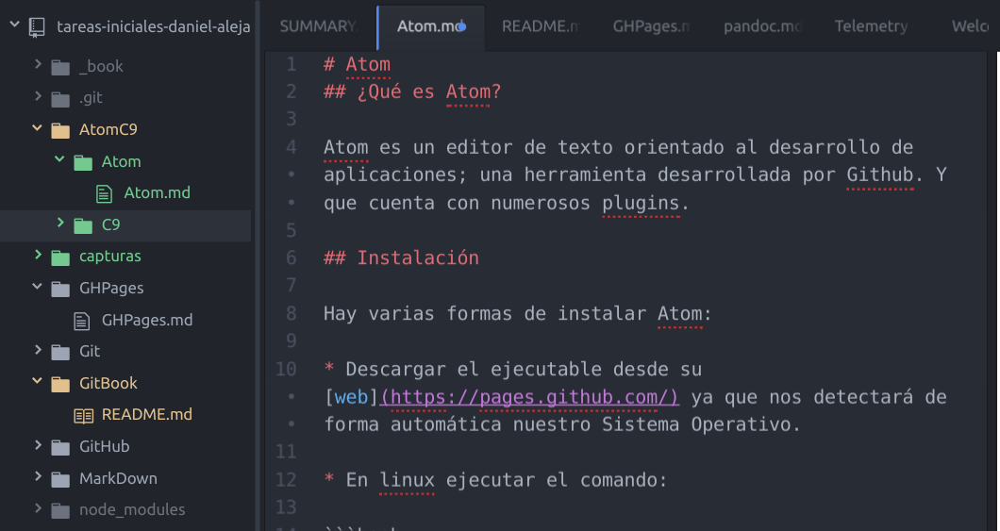

Atom
¿Qué es Atom?
Atom es un editor de texto orientado al desarrollo de aplicaciones; una herramienta desarrollada por Github. Y que cuenta con numerosos plugins.
Instalación
Hay varias formas de instalar Atom:
Descargar el ejecutable desde su web ya que nos detectará de forma automática nuestro Sistema Operativo.
En linux ejecutar el comando:
sudo add-apt-repository ppa:webupd8team/atom
sudo apt-get update
sudo apt-get install atom
Al finalizar la instalación podrémos utilizarlo. Un ejemplo de uso:
